Step 4: AI Content Review¶
Goal: an AI reviewer checks pages against the Northmoor house style. It gives each page a score, quotes every problem it finds, and suggests corrections. Editors decide which suggestions to follow, correct the text and review it again.
Before you start: this step adds new Composer packages. Check out the branch of this step and install them:
git checkout 04_ai_content_review
ddev composer install
ddev drush cache:rebuild
Then:
- to do this step yourself, continue with your site from step 3;
- to skip to the result of this step, run
ddev catch-up.
1. How AI Content Review works¶
- A review rule says which content is reviewed (here: all Utility pages) and against which criteria.
- A criterion is one editorial check with a written rubric, scored examples and a pass and a warning threshold. This step uses one criterion: Grammar & Conventions.
- An AI agent is the judge. It reads the page and the rubric, and reports a score, an explanation and suggestions through a tool.
- Every run is stored as a review record, with the revision of the page it reviewed. Suggestions are stored with it.
- Reviews run on demand: an editor clicks a button, or reviews are queued in bulk. They never run automatically when a page is saved.
Two pages of the sample site contain deliberate style errors for this step: Visit campus and Tuition and financial aid. Look at them first: they have title-case headings, British spelling, dash ranges, "click here" links and exclamation marks.
2. Apply the recipe¶
There is no public recipe for AI Content Review yet. The workshop recipe recipes/workshop_ai_content_review installs the modules and adds the rule and the agent.
ddev drush recipe ../recipes/workshop_ai_content_review
| Module | Project | What it does |
|---|---|---|
AI Content Review (ai_content_review) |
AI Content Review | Review rules, criteria, review records, suggestions and the review UI. |
AI Agents (ai_agents) |
AI Agents | The judge agent. Already installed in step 1. |
Entity (entity) |
Entity API | Required by AI Content Review. |
Token (token), Token Entity Render (token_entity_render) |
Token, Token Entity Render | The token [node:render:full], which passes the rendered page to the agent. Without it, the agent sees no content. |
3. The review rule¶
Go to Configuration › AI Setup and Configuration › Review Rules and edit Editorial review.
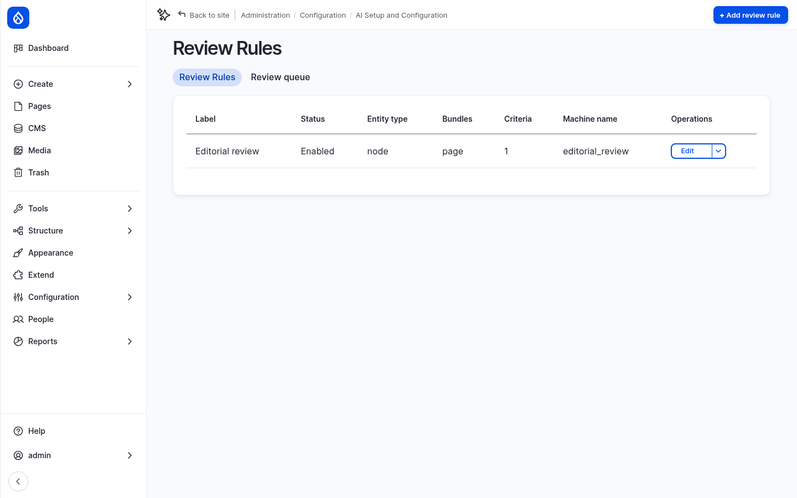
The rule reviews Content of the subtype Utility page. It has one criterion, Grammar & Conventions.
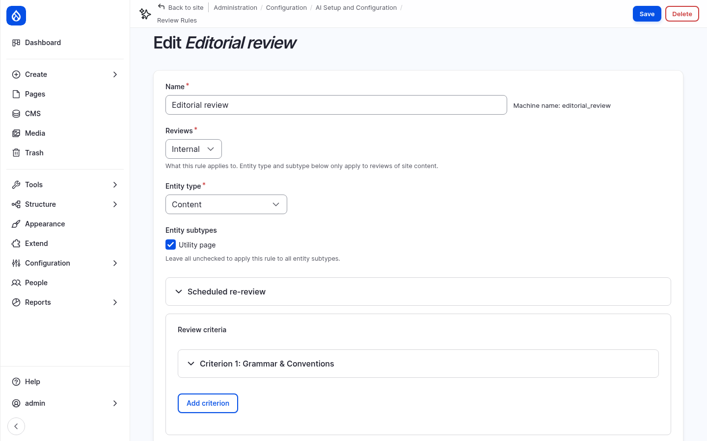
Open Criterion 1: Grammar & Conventions:
- Criterion type: Agent-based criterion. An AI agent does the review.
- AI agent: Content Review.
- AI provider: amazee.ai – claude-4-5-haiku. The workshop uses a fast model here: a review with the default chat model of the amazee.ai trial takes longer than the 30-second request limit of the provider. If you use OpenAI or Anthropic, choose one of their models.
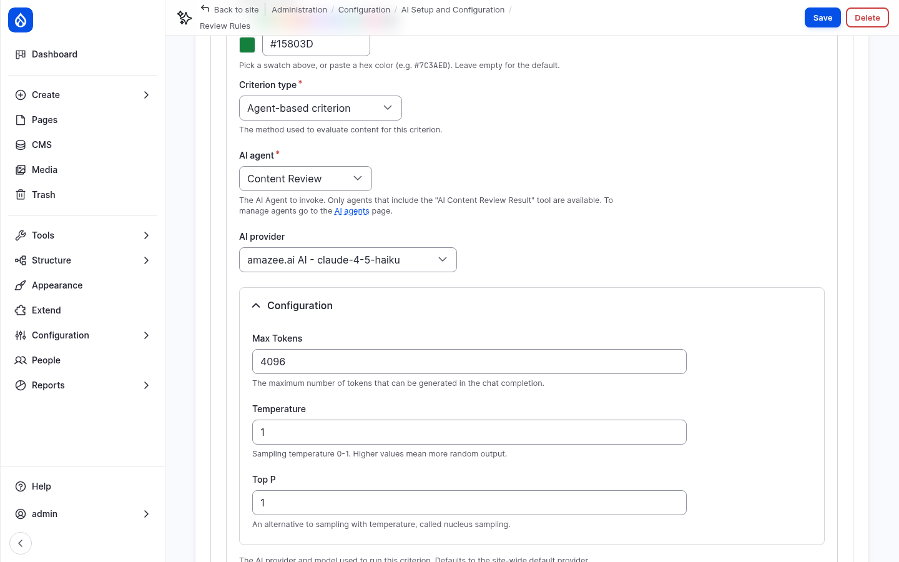
- Execution mode: Direct runs the review in one request. Polling runs it step by step from the browser, for long reviews.
- Guidelines & rules: the rubric the AI reads. It has these parts:
- Method: start at 100, subtract 5 for each error, and report the arithmetic.
- Two counting rules: each rule counts at most two errors, and an error only counts if the AI can quote the text and name the rule.
- A closed list of 10 house-style rules: sentence-case headings, dates such as November 19, 2026, times such as 9 a.m., ranges with "to" instead of a dash, American spelling, link text that stands alone, at most two em dashes, no exclamation marks or ampersands, course codes, and no sentence over 40 words.
- A list of things that are not errors, because they caused false findings in tests.
- How to write suggestions: a short rationale for an editor, in plain words.
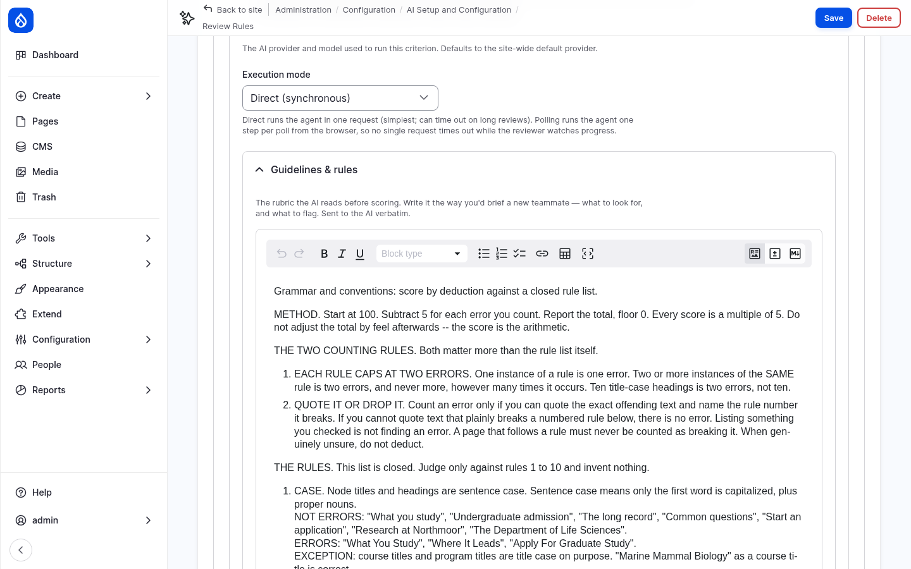
- Scoring thresholds: below 85 fails, 85 to 89 warns, 90 and above passes.
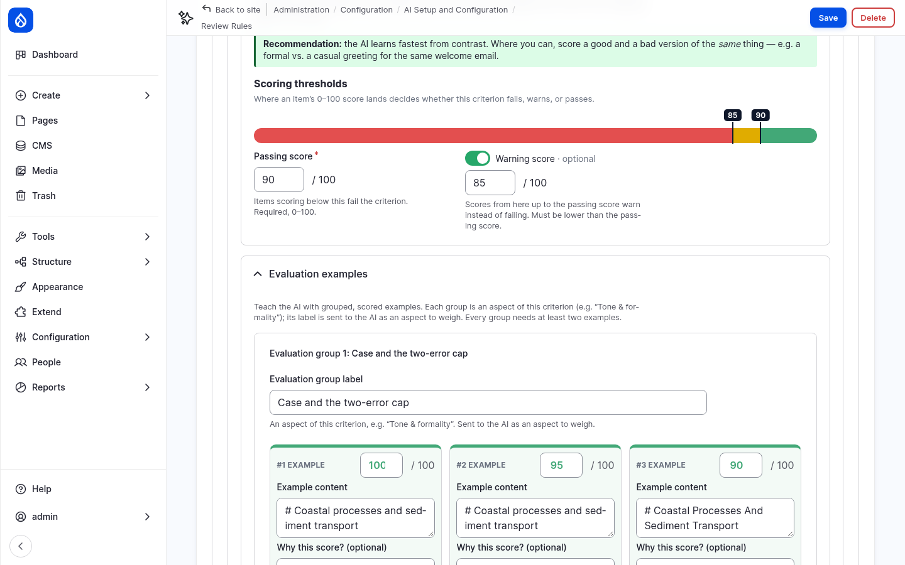
- Evaluation examples: short texts with their correct score and the reason. They calibrate the AI, so that it scores the way the editorial team would. Each group is an aspect of the criterion, such as Case and the two-error cap.
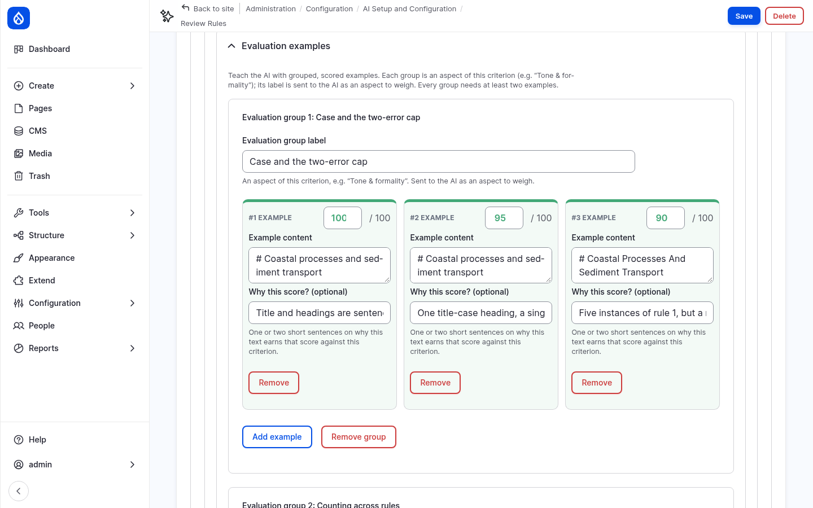
4. The Content Review agent¶
Module: AI Agents (ai_agents).
Edit the Content Review agent.
Its instructions contain the content between --- BEGIN CONTENT --- and
--- END CONTENT ---, as the tokens [node:title] and [node:render:full]. The rubric
and the examples of the criterion are sent in the task message.
The agent has two tools from AI Content Review:
- AI Content Review Result reports the score, severity, explanation and suggestions. It is set to Require usage and Return directly: the agent must call it, and its result is the answer. You saw these tool settings in step 1.
- AI Content Review Suggestion Item describes the format of a suggestion. The agent does not call it directly.
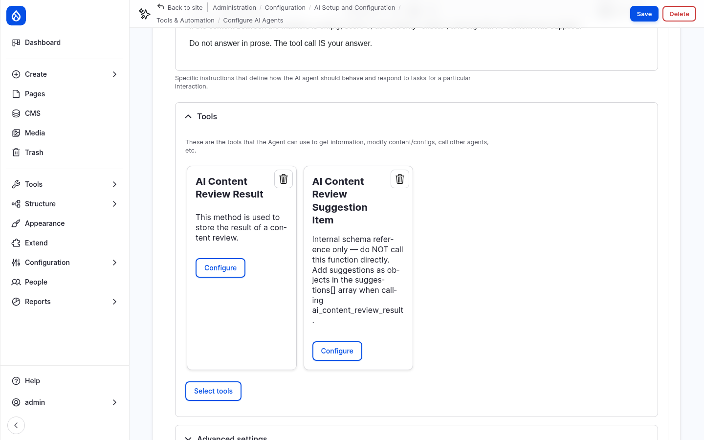
5. Permissions¶
Administrators have every permission. To let content editors run reviews, give the Content editor role the permissions Run AI content reviews, View AI review records and View AI review records history on the AI Content Review permissions page, or with:
ddev drush role:perm:add content_editor 'run reviews'
ddev drush role:perm:add content_editor 'view review records'
ddev drush role:perm:add content_editor 'view review history'
6. Review a page¶
- Open Visit campus and click the AI Review tab.
- Click Review. After about 10 seconds, the result appears: a score of about 60%, grade Fail.
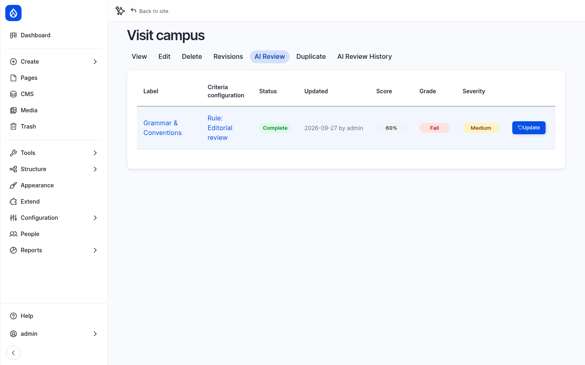
- Click Edit. The sidebar of the edit form has a Content Review panel with the same result. Click Grammar & Conventions to open the details.
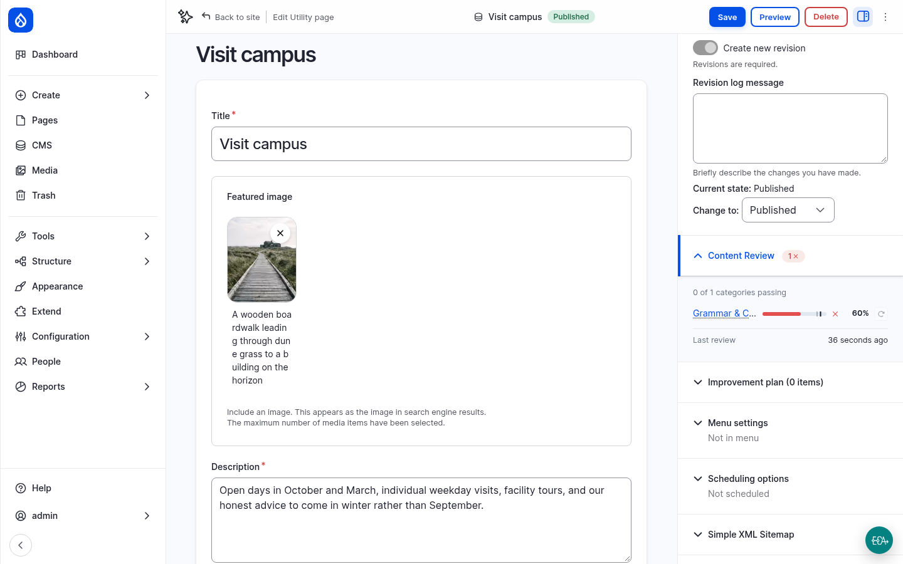
The explanation counts every error, quotes the text, names the rule and shows the arithmetic, for example Rule 2 (Dates): "17 October 2026" should be October 17, 2026. Below it are the recommendations. Each one has a new value and a short rationale. Show proposed change compares the current and the suggested value.
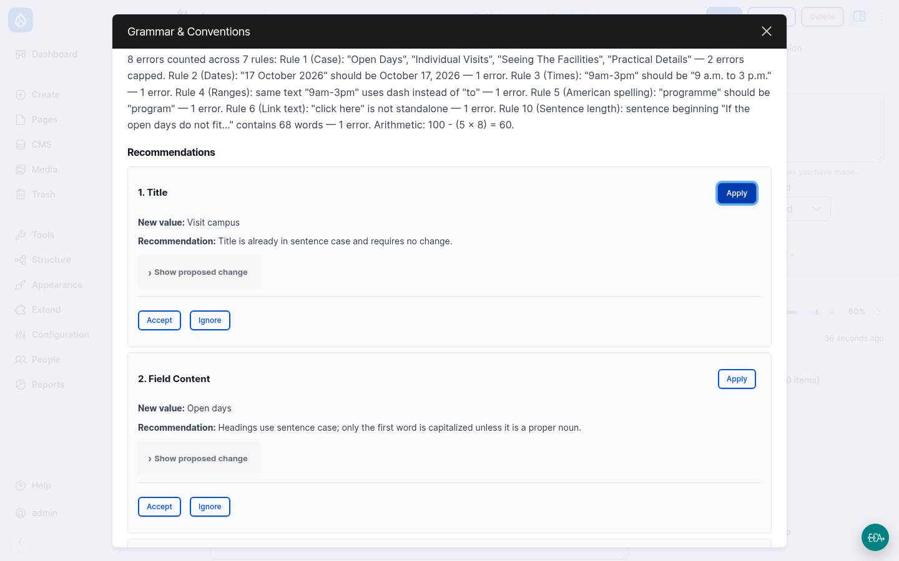
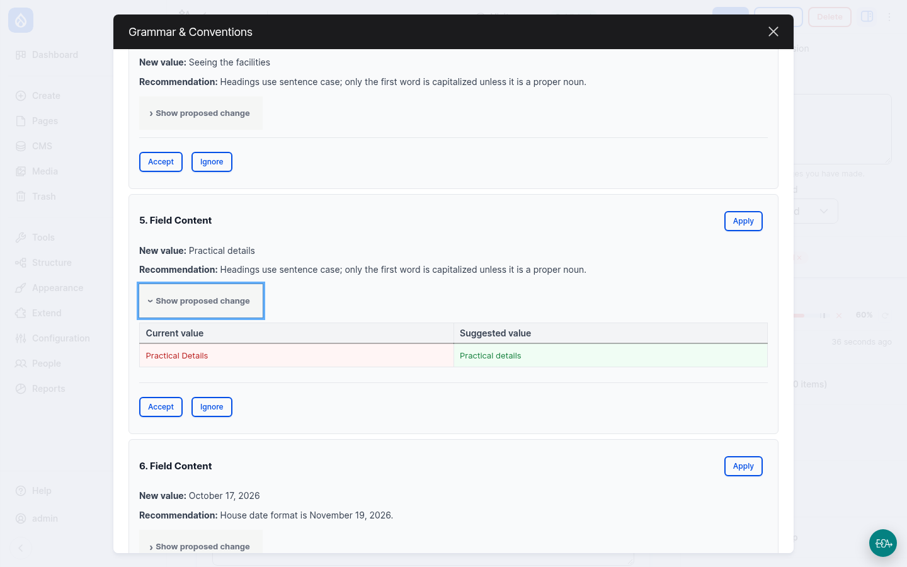
Do not click Apply. In the current version of AI Content Review (1.0.0-alpha3), Apply replaces the whole field with the suggested value. The suggestions here are short phrases, so applying one replaces the entire page text with a few words, and the page is saved immediately. If it happens, restore the previous revision on the Revisions tab, or run
ddev catch-up.This is a known bug, see issue #3585854.
7. Plan and correct¶
- For each recommendation, click Accept or Ignore. Not every suggestion is right. For example, the reviewer may suggest a "change" that keeps the text the same. The editor decides.
- Close the dialog and open Improvement plan in the sidebar. It lists the accepted suggestions as tasks that you check off as you correct the text.
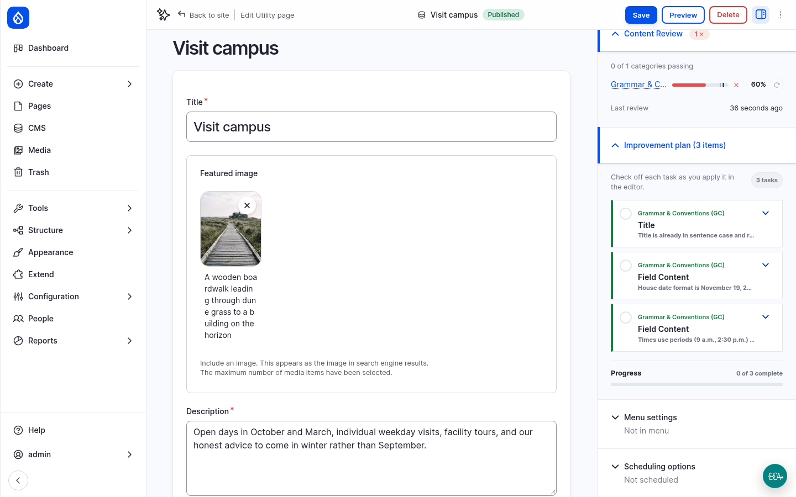
- Correct the text in Content yourself: headings in sentence case, the date and time formats, program and center, no exclamation mark or ampersand, a link text instead of "click here", and the very long sentence split in two.
- Save the page.
- Go back to the AI Review tab and click Update. The review runs on the new revision. With the errors corrected, the page passes.
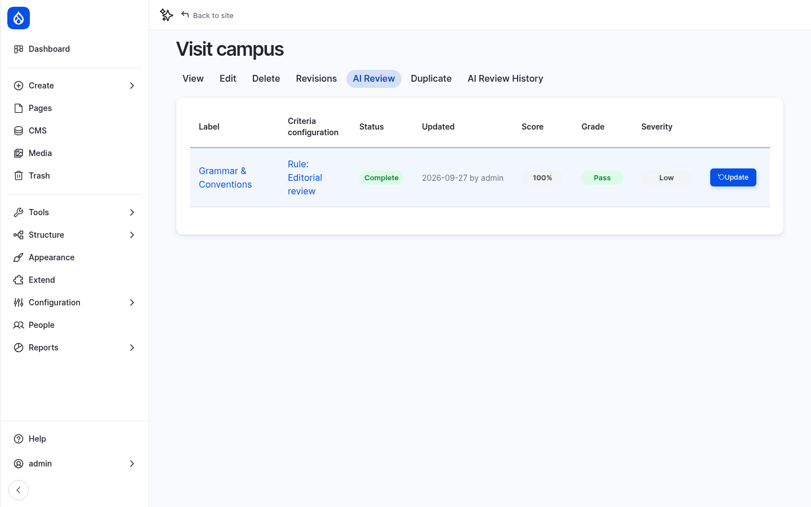
The AI Review History tab lists every review of the page, with its revision and score.
8. Compare and get an overview¶
- Review Tuition and financial aid, the second page with errors. It also fails.
- Review a page without deliberate errors, for example About Northmoor. It passes, or comes close.
- Go to Content › AI content review. It lists all pages with their review results, and can be filtered by outcome and criterion. The bulk action Queue AI review reviews several pages at once, on cron. It needs the permission Queue AI reviews in bulk.
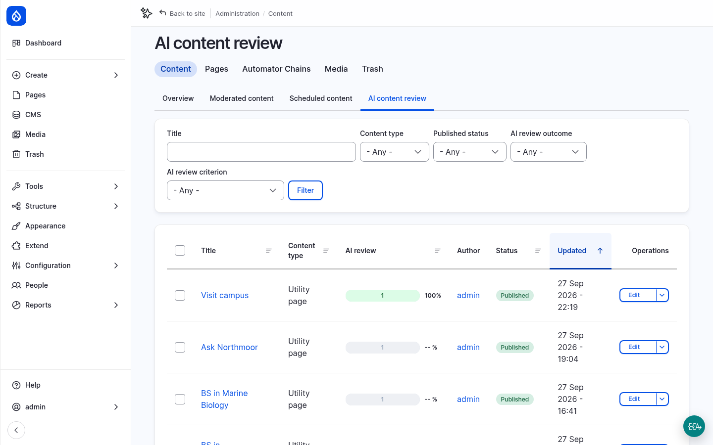
Every review is an AI request. Open AI Logs to see the prompt the agent received and the tool call it returned.
More to try¶
- Your own house rule: add a rule 11 to the criterion's Guidelines & rules, for example Northmoor University is never abbreviated as NU, and save the rule. Earlier results no longer count, because the criterion has changed. The button on the AI Review tab changes to Update.
- Stricter thresholds: set the passing score to 95 and review About Northmoor again.
- A second criterion: click Add criterion and write a short Readability criterion, for example: Judge how easily a general reader gets through this content: short sentences, common words, one idea per sentence.
Checkpoint¶
You now have:
- the rule Editorial review with the criterion Grammar & Conventions for all Utility pages
- a reviewed and corrected Visit campus page that passes
- an overview of the review results of all pages
If something does not work, reset your site to the end of this step:
git checkout 04_ai_content_review
ddev catch-up